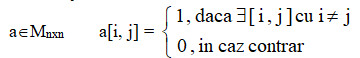
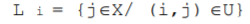
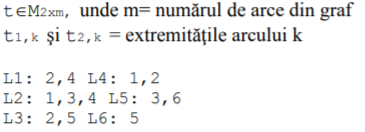

1. Caracteristici și proprietăți
- nod izolat = nod cu gradul intern și extern 0
suma gradelor interioare = suma gradelor exterioare = numărul de arce
drum = succesiune de noduri cu proprietatea că oricare două noduri consecutive sunt adiacente (arcele
pastreaza aceeasi orientare);
- drum simplu = drum în care fiecare arc apare o singură dată dar nodurile se pot repeta
- drum elementar = drum în care nodurile sunt distincte
- circuit simplu = circuit în care fiecare arc apare o singură dată dar nodurile se pot repeta
- circuit elementar = circuit în care nodurile sunt distincte, cu excepţia primului şi ultimului nod
2. Tipuri particulare de grafuri
- graf plin = graf în care intre orice două noduri distincte x si y exista arc dus-întors (x, y) si (y, x)
- graf complet = graf în care orice două noduri distincte sunt adiacente; (nu este unic, numarul de arce este cel mult n(n-1))
- Numărul de arce într-un graf plin = n(n–1)
- Numărul grafurilor orientate cu n vârfuri este 2n(n-1)= 4n(n-1)/2
- Numărul grafurilor orientate COMPLETE cu n vârfuri (există cel puțin un arc între oricare două noduri) este 3 n(n-1)
- graf tare conex = graf în care nu există nici un ciclu
- componentă tare conexă = oricare ar fi două noduri distincte x si y, există drum DUS-ÎNTORS de la x la y
- componentă conexă = un subgraf tare conex şi maximal în raport cu această proprietate (nu există drum între un nod din subgraf şi un nod care nu aparţine subgrafului) Observație: un nod izolat constituie o componentă tare conexă.
Observații:
3. Metode de reprezentare a grafurilor orientate în memorie
-
Matricea de adiacență

-
Listele de adiacenţă

-
Listele de arce

Matricea de adiacenţă nu este simetrică faţă de diagonala principală. Numărul de elemente 1 din matricea de
adiacenţă este egală cu numărului de arce din graf. Suma elementelor de pe linia x a matricei de adiacenţă este egal
ă cu gradul exterior al nodului x. Suma elementelor de pe coloana x a matricei de adiacenţă este egală cu gradul
interior al nodului x.